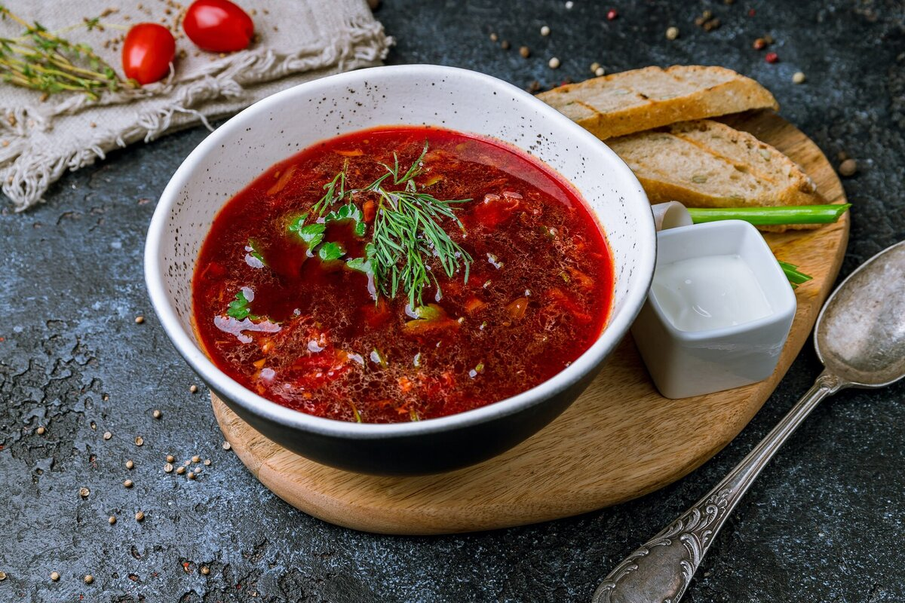

Борщ

Ингредиенты
- Говядина на кости - 500 г
- Свекла - 2 шт
- Капуста - 300 г
- Картофель - 3 шт
- Морковь - 1 шт
- Лук репчатый - 1 шт
- Томатная паста - 2 ст.л.
- Уксус - 1 ч.л.
- Сметана - для подачи
- Зелень - по вкусу
Способ приготовления
- Приготовьте бульон: варите говядину 1.5 часа, снимая пену.
- Нарежьте картофель и капусту, добавьте в бульон.
- Натрите свеклу и морковь, обжарьте с луком и томатной пастой.
- Добавьте уксус к свекле для сохранения цвета.
- Заправку добавьте в суп за 10 минут до готовности.
- Дайте борщу настояться 30 минут перед подачей.
- Подавайте со сметаной и зеленью.
Советы от шефа
Для насыщенного цвета можно добавить немного свекольного сока. Борщ вкуснее на второй день, когда все вкусы полностью раскроются.